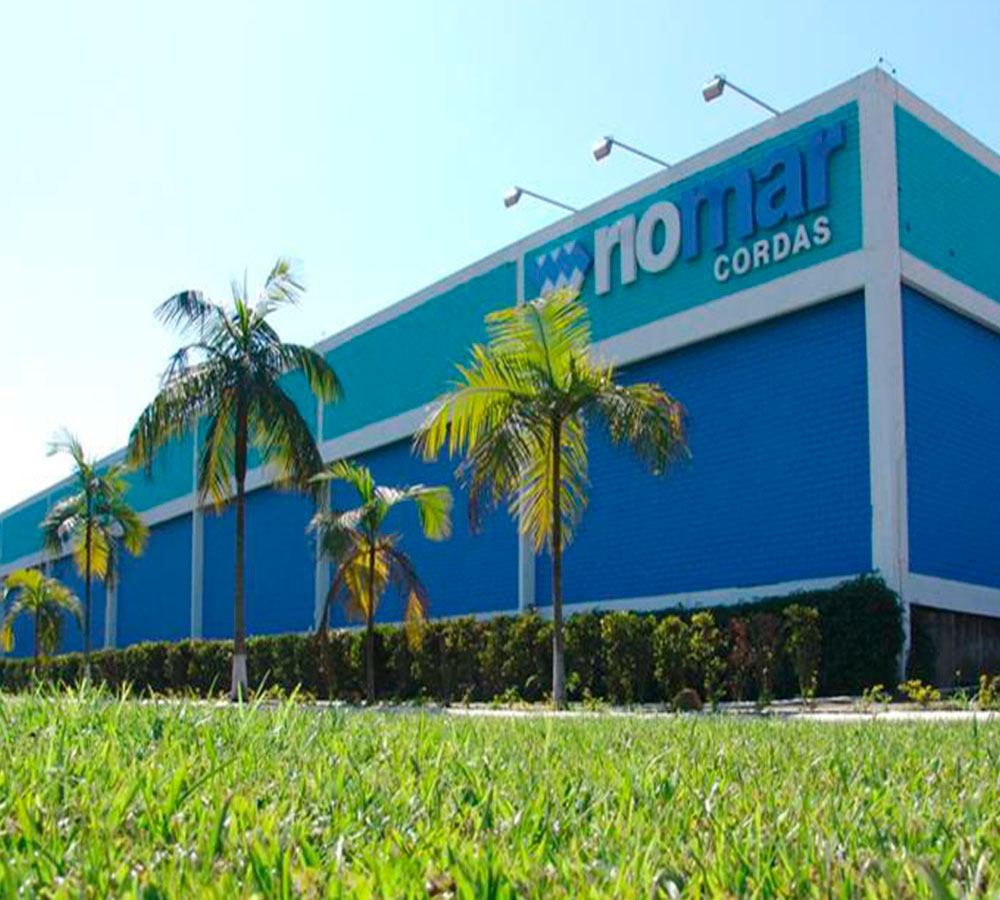
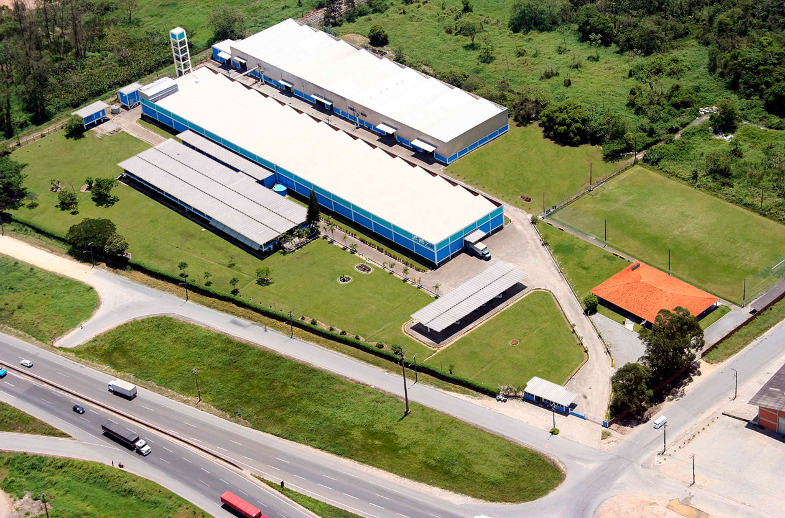
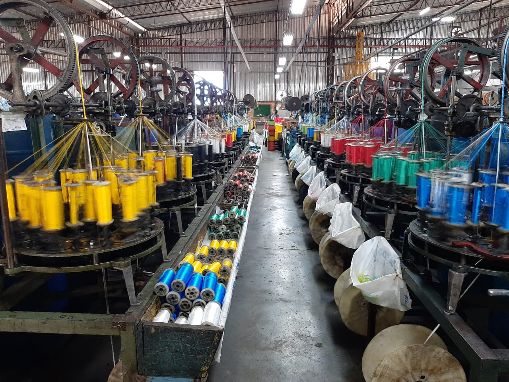

Comprometidos com a máxima qualidade em cada produto fabricado.
Sempre desenvolvendo novos produtos mais modernos e eficientes.
A corda que o Brasil conhece e confia há mais de 65 anos.
Linha PET produzida a partir de embalagens recicladas.
350+ colaboradores formando a espinha dorsal da empresa.
Produto brasileiro, presente em todos os 27 estados.
Em conformidade com a legislação brasileira (Lei 14.611/2023), a Riomar Cordas publica o Relatório de Transparência e Igualdade Salarial entre mulheres e homens, reafirmando seu compromisso com a igualdade e a equidade no ambiente de trabalho.
Acessar Relatório de Transparência